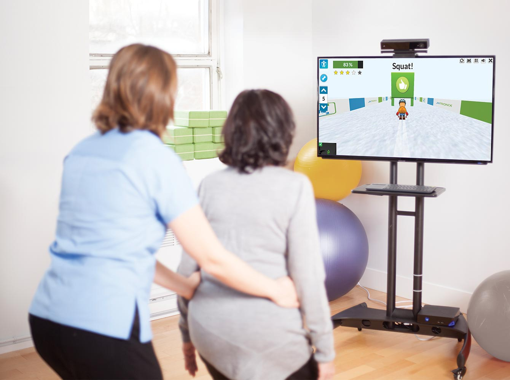

Healthcare product strategy built around how people actually work.
I help healthcare and wellness teams turn messy workflows into products people actually use. Seven years scaling Jintronix to 500+ clinical sites. Canyon Ranch's first mobile app to 78% adoption in three weeks. My job is to find the friction early, make the tradeoffs visible, and keep the product honest once real users get involved.
Product strategy for healthcare
and wellness teams. Built around the work
people already have to do.
Product Strategy
& Roadmaps
Every organization has the process on paper and the one people actually use to get through the day. The roadmap has to answer to the second one. I work with leadership, product, and frontline teams to find where the work breaks, then turn that evidence into scope, sequencing, and decisions the team can act on.
Change Enablement
& Adoption
Adoption usually breaks in the gap between what leadership approved and what frontline teams can live with. I stay with teams through that gap, turning research into workflow changes, training decisions, and release calls. In clinical settings, change has to respect patient load, compliance pressure, and the work already happening in the room.
Program
Measurement
If success gets defined after rollout, the team is already late. I set adoption and outcome measures while the work is still shapeable, establish the baseline, and keep the data visible while decisions are being made. In healthcare, usage data and outcome data are not the same thing. Opening the platform does not mean the clinical workflow changed.
Good work starts
with honest
questions.
Evidence before opinion
I separate what we know from what we assume. Every recommendation is grounded in data, observation, and documentation.
Make research change the decision
Research earns its keep when it changes what the organization does next. I stay involved through strategy and execution so the useful signal does not die in a deck.
Name the finish line early
Success should not be a post-launch debate. Naming it early forces the harder conversation about what the work is supposed to change.
Designing AI workflows for real decisions.
Independent practice · In progressI am building a private set of role-based AI agents to test a simple question: can AI make strategy work sharper when it is built into a workflow instead of treated like a blank chat box? This is self-initiated R&D, not a client case study. The useful part is the habit: define the decision, bring in the right context, pressure-test the answer, and keep a human accountable for the call.
Each agent has a job. The marketing agent checks positioning, customer specificity, pricing, and go-to-market choices. The operations agent looks for bottlenecks, capacity constraints, wait time, and workflow friction. The finance agent turns numbers into decisions and watches for risk. The chief-of-staff layer keeps priorities from turning into a junk drawer.
Start with the work
The question comes before the tool. If the user, business goal, or constraint is fuzzy, the workflow stops there and makes the missing piece visible.
Show the receipts
Recommendations separate what is known, assumed, and missing. If the answer depends on a guess, it should say so plainly.
Adoption before scale
An agent is only useful if it changes how work gets done. I look for clearer decisions, faster first drafts, repeatable steps, and less mental clutter.
Keep judgment human
The point is not to automate leadership. It is to make expert judgment easier to apply when the work crosses product, operations, finance, and market strategy.
Case Studies
Healthcare technology often fails at the workflow layer. The platform launches, but the behavior does not change. These case studies sit in that gap: skilled nursing teams deciding whether to trust a rehabilitation platform, technologists using imaging tools under real time pressure, guests trying to book care without staff mediation, and patients trying to understand clinical trials before they can act.

Canyon Ranch
Digital Experience
Defined the product strategy for Canyon Ranch's first mobile app, moving routine booking off the front desk and tying launch scope to adoption, revenue, and staff capacity.
View case studyJintronix
Rehabilitation Platform
Rebuilt rehabilitation workflows around therapist trust, patient motivation, and clinical visibility, helping the platform scale across 500+ clinical clients.
View case study

GE Healthcare
Diagnostic Viewer
Translated global field research into the interaction model for medical imaging software used under real throughput, patient-care, and diagnostic pressure.
View case studyConnect2Trials
Patient Matching
Defined the MVP for a clinical trial matching platform, clarifying patient language, prescreening, and sponsor workflows before engineering investment.
View case study
What it feels like
to work with me.
"He takes on client challenges like they are his own. He is patient, thoughtful, organized, proactive, and thorough. My team felt Chris's deep investment and commitment, his passion and talent, throughout our work together. I still miss working with him."
"He went above and beyond our initial scope to eventually deliver us a clickable prototype to demonstrate to potential investors. We received accolades for our work, including winning of pre-seed round for the product that Chris designed. I would work with him again in the future for anything, particularly when things are vague and unclear."
"Chris effectively draws out users' psychological drivers, operational objectives, and functional requirements, leading to +15% revenue gains and 78% adoption. With excellent communication skills he tells leadership what they need to hear, not what they want to hear."
"Chris has a way of understanding what users need before you've fully articulated it yourself. He was easy to work with. The project went better because he was on it."